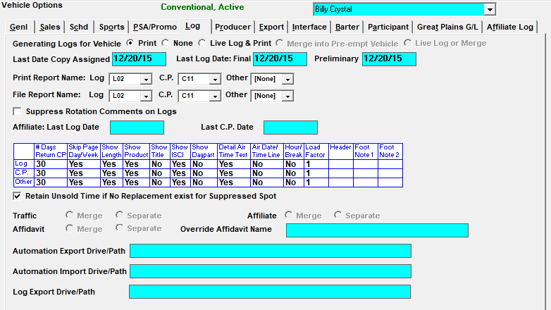
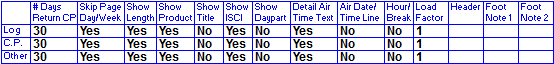
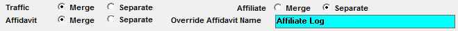

Log Options
The Log Tab is where you set log parameters.

Generating Logs for Vehicle:
- “Print”: Will allow the Vehicle to print or PDF a log
- “None”: If None is selected, no log will be generated, however the log dates will advance, and the vehicle will be able to be exported to an automation system. This is not an option if your log has to go to the Counterpoint Affidavit System
- If “None” is selected, when a log or export is generated for a Sunday, and there is a time zone table defined for the vehicle, the system locks avails on Monday that were already generated on the Sunday log for all non-Eastern time zones
- For example, if a 10pm Pacific Time Sunday spot is actually coming from 1am Eastern on Monday, the 1am Eastern avail will be locked since it was trafficked and closed in advance
- This also affects selling vehicles. The system will look at the times of the selling and airing links, and lock the appropriate selling avails. Here are two examples of how this will work:
- A 4am selling avail that links to a 2am airing avail: the 4am selling avail will be locked since it is trafficked and closed in advance
- A 2am selling avail that links to a 4am airing avail: the 2am selling avail will not be locked
- “Live Log and Print”: This option allows a log to be printed, and allows the vehicle to be reconciled through Live Log
- “Merge into pre-empt vehicle”: This option is used if a sports vehicle is pre-empting another vehicle and you want the sports vehicle’s spot information to merge onto the pre-empted vehicle’s log. This option is particularly useful if the event needs to be merged onto a 24 hour log for automation and reconciliation purposes
- “Live Log or Merge”: This option is used if a sports vehicle is pre-empting another vehicle and you want the option of either merging the event information onto the pre-empted vehicle’s log to be reconciled via an automation system, pr exporting the event information to Live Log for reconciliation
Last Date Copy Assigned, Last Log Date: Final, Preliminary: These dates are used to track the last date that was copy was assigned to this vehicle, the last final log date, and the last preliminary log date. When creating a new vehicle, enter the date one day prior to the first log that you will be generating as the “Last log date: final”. Once entered, it will update automatically after each log generation. The Last Date Copy Assigned and Preliminary log dates will also update automatically when copy is assigned and when the preliminary log is generated.
Print Report Name: These options let you choose which log format and certificate of performance format will be the default when printing the log. The log format is selected from the “Log” dropdown; the certificate of performance format is selected from the “C.P.” dropdown, and the “Other” dropdown is used to pick either an additional log format or an additional certificate of performance format.
File Report Name: If you are saving your Logs/CPs to a folder defined in the LogGenExport path of the Traffic.ini, you must have a File Report Name defined. If not, the export will be saved in the folder defined in the Save Reports path of the Traffic.ini. The log format is selected from the “Log” dropdown; the certificate of performance format is selected from the “C.P.” dropdown, and the “Other” dropdown is used to pick either an additional log format or an additional certificate of performance format.
Suppress Rotation Comments on Logs: This option, when checked, suppresses any copy rotation comments from appearing on the Traffic log when the copy was assigned from rotations that were entered that include this vehicle in the vehicle field of the rotation header.
Allow Copy on Airing Vehicles: This option only appears for airing vehicles. When set to Yes, copy rotations can be created for the airing vehicle. When set to No, copy rotations cannot be created for airing vehicles (the selling or package vehicle must be used).
Affiliate Last Log Date: This is updated when the log information is printed from the Affiliate System. If this vehicle is for the affiliate system this date would be set to the date before the vehicle is live on the Affiliate System.
Last CP Date: This is updated when certificates of performance are printed from the Affiliate System. If this vehicle is for the affiliate system this date would be set to the date before the vehicle is live on the Affiliate System.
Customizable Log Grid: This grid is used to select the options used by customizable logs and certificates of performance.

Retain Unsold Time if No Replacement exist for Suppressed Spot: When “Retain Unsold Time if No Replacement exist for Suppressed Spot” is selected, the log/CP will show the unsold time when a spot has been suppressed in the Blackout feature.
For Airing Vehicles, Honor Zero Units: This option appears for airing vehicles. When this option is checked, any airing vehicle break with either zero units or zero seconds (or both) will be bypassed on the Traffic log, when using Auto-Fill to create the pledges on the Agreement screen, and when generating the following exports: Automation, Dallas Feed, Phoenix Log, Clearance and Compensation, and Engineering Feed. This makes it possible to have airing vehicles that air different breaks on different days because the breaks that do not air on specific days can be defined with zero units or with a zero second length (in the Programming Library), so that even when spots are booked in the corresponding selling vehicle break, the spots will be bypassed. When the "For Airing Vehicles, Honor Zero Units" option is not checked, regardless of the airing vehicle break length (in units or seconds), if it's linked to a selling avail, any spots booked in the selling vehicle avail will be included with the airing vehicle in the corresponding break. For more information on using this feature, see the Programming Screen help document that is available on the Counterpoint website. (This option is available on version 7.0 and above.)
Merge Feature
If you merge vehicles onto a Log Vehicle, you can control the areas of the system in which spots will and will not merge by selecting the appropriate fields for the vehicles that make up the log vehicle.

- “Traffic”: This will cause vehicles to merge onto one Traffic log (Merge), or produce separate Traffic logs (Separate).
- “Affiliate”: This allows an affiliate agreement to be created for the Log vehicle (Merge), or for the individual vehicles that make up the Log vehicle (Separate).
- “Affidavit”: This will allow your affiliates to post all merged vehicles on one affidavit (Merge), or each vehicle on a separate affidavit (Separate).
Override Affidavit Name: This name will override the traffic vehicle name and appear on the Counterpoint Affidavit System web log and affidavit instead of the traffic vehicle name.
Automation Export/Import Drive/Path: You can enter the path of the folder where your Automation exports and imports are stored for easy exporting and importing.
Log Export Drive/Path: On version 7.1 and above, there are two ways of setting where the log that gets generated during the log generation process gets exported to when it gets saved directly to file. A path can be entered in the “Log Export Drive/Path” field to have the log files get created in the specified location for that specific vehicle. On the Traffic.ini file, in the Locations section, “LogGenExport” can be entered, along with a path, to have all the log files (for any vehicle without a path defined on the Vehicle Options screen) get exported there. When these paths are not used, then the log files will get created in the Export path defined in the Locations section of the Traffic.ini.